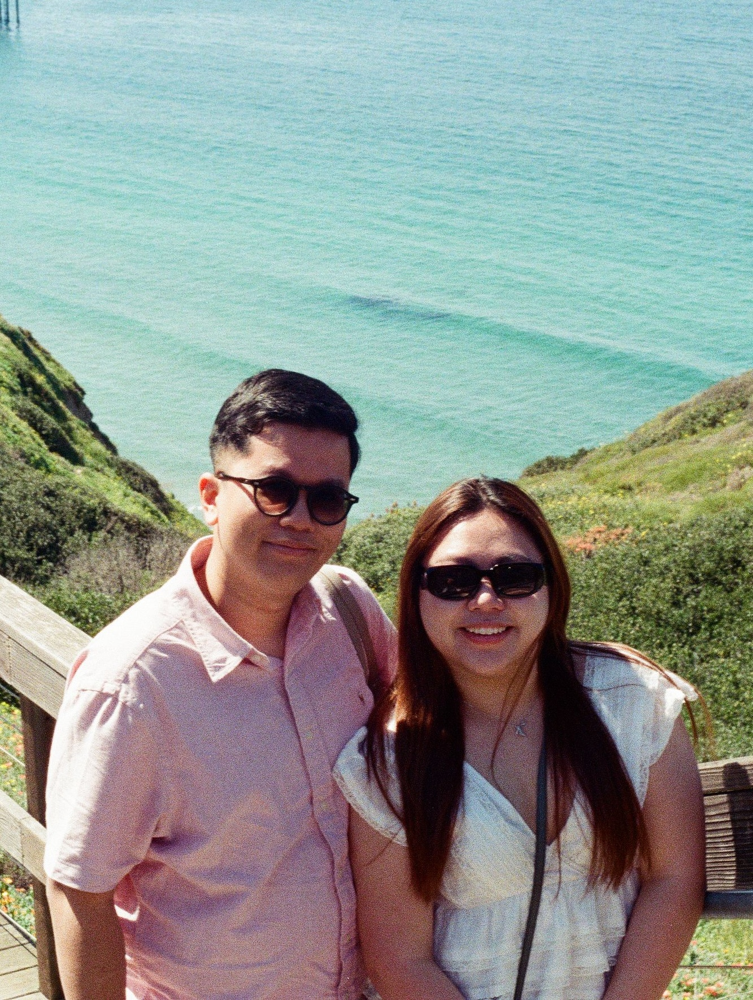

Welcome back! I'm Tony, an AI researcher who believes AI systems should be reliable, transparent, and genuinely useful under real-world constraints.
I graduated from Gonzaga University, working with Dr. Jay Yang at the Institute for Informatics & Applied Technology (IIAT), and I'm now headed to Northeastern for an M.S. in AI with a Machine Learning concentration. My research focused on LLM evaluation and AI-assisted threat hunting — including building the Wazuh MCP Server, an open-source tool that lets LLMs investigate security events through structured tool calls. I've also worked across data engineering and ML roles in three countries, building pipelines and dashboards for enterprise clients at KONE, TecAlliance, and KPIM Vietnam.
Outside of research, I'm usually exploring somewhere new with my girlfriend, Hân, or hanging out with my cat Sabrina, or mèo Na, in Vietnamese.